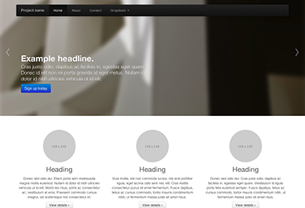

1. Download
Antes de fazer o download, certifique-se de ter um editor de código (nós recomendamos o Sublime Text 2) e algum conhecimento de HTML e CSS. Nós não iremos detalhar os arquivos fonte aqui, mas eles estão disponíveis para download. Nós iremos focar nos arquivos do Bootstrap já compilados
Download compilado
A maneira mais rápida de começar: ter a versão compilada e minificada do seu CSS, JS e imagens. Nenhuma documentação para os arquivos fontes originais.
Download source
Get the original files for all CSS and JavaScript, along with a local copy of the docs by downloading the latest version directly from GitHub.
2. Estrutura de arquivos
Dentro do download você irá encontrar o a seguinte estrutura de arquivos e seus conteúdos, logicamente agrupando componentes comuns e provendo variações minificadas e compiladas
Uma vez feito o download, descompacte o diretório comprimido para ver a estrutura do Bootstrap (compilado). Você irá ver algo assim:
bootstrap/
├── css/
│ ├── bootstrap.css
│ ├── bootstrap.min.css
├── js/
│ ├── bootstrap.js
│ ├── bootstrap.min.js
└── img/
├── glyphicons-halflings.png
└── glyphicons-halflings-white.png
Isto é um dos mais básicos do Bootstrap: arquivos compilados para rapidamente ser usado em seu projeto web. Nós provemos CSS e JS compilados (bootstrap.*), assim como um arquivo JS e CSS compilado (bootstrap.min.*). Os arquivos de imagens são comprimidos usando o ImageOptim, uma aplicativo Mac para comprimir PNGs.
Por favor note que todos plugins JavaScript requerem que o jQuery seja incluído
3. O que está incluso
O Bootstrap vem equipado com HTML, CSS e JS para todos tipos de coisas, mas eles são sumarizados em uma divisão de categorias útis e visíveis no topo da documentação do Bootstrap.
Seções da documentação
Base do desenvolvimento
Estilos globais para o corpo para reiniciar tipografia e background
CSS Base
Estilos para elementos comum de HTML como tipografia, código, tabelas, formulários e botões. Também é incluído um Glyphicons, uma ótima coleção de ícones
Componentes
Estilos básicos para componentes de interface comuns, como abas e pílulas, barras de navegação, cabeçalhos de página e muito mais
Plugins JavaScript
Similar aos Componentes, estes plugins JavaScript são componentes interativos para coisas como tooltips, popovers, modais, e mais.
Lista de componentes
Juntos, a seção de Componentes and plugins JavaScript
- Grupos de botões
- Dropdown de botões
- Abas de navegação, pílulas, e listas
- Barra de navegação
- Labels(rótulos)
- Badges
- Cabeçalhos de página e unidade herói
- Imagem miniaturas
- Alertas
- Barra de progresso
- Modais
- Dropdowns
- Tooltip
- Popovers
- Acordeon
- Carousel
- Typehead
Em guias futuros, nós iremos aprofundar nestes componentes individualmente. Até lá, veja cada destas documentações para informações em como utilizar e customizá-los.
4. Template de HTML básico
Com uma breve introdução nos conteúdos fora do caminho, nós podemos focar em colocar o Bootstrap para uso. Para fazer isto, nós utilizamos um template de HTML básico que inclui tudo mencionado na Estrutura de arquivos.
Agora, aqui está uma olhada no arquivo HTML típico
<!DOCTYPE html>
<html>
<head>
<title>Bootstrap 101 Template</title>
</head>
<body>
<h1>Hello, world!</h1>
<script src="http://code.jquery.com/jquery-latest.js"></script>
</body>
</html>
Para fazer isto em um template Bootstrap, só inclua o css apropriado e o arquivo JS
<!DOCTYPE html>
<html>
<head>
<title>Bootstrap 101 Template</title>
<!-- Bootstrap -->
<link href="css/bootstrap.min.css" rel="stylesheet" media="screen">
</head>
<body>
<h1>Hello, world!</h1>
<script src="http://code.jquery.com/jquery-latest.js"></script>
<script src="js/bootstrap.min.js"></script>
</body>
</html>
E você tem tudo pronto! com estes dois arquivos adicionados, você pode começar a desenvolver qualquer site ou aplicação com o Bootstrap
5. Exemplos
Vá além do template básico com poucos exemplos de layouts. Nós encorajamos as pessoas a iterar nestes exemplos e não simplesmente usá-los como resultado final
-

Modelo inicial
Um documento HTML esqueleto com todos CSS's do Bootstrap e Javascript inclusos
-

Site básico de marketing
Com a funcionalidade de uma unidade herói para mensagens primárias de três elementos suportados
-
Layout fluido
Usado para nosso novo responsive, o sistema de grid fluido cria um layout líquido com todo sentido
-
Para sites de marketing
Pequeno, leve e um template de marketing para pequenos projetos ou times
-
Entrar
Esqueleto de aviso com formulário customizado, maiores controles de formulário e layout flexível
-
Rodapé Colado
Coloque um rodapé de altura fixa na parte inferior da área útil do browser
-

Carrossel jumbotron
Um riff mais interativo do site de marketing
O que vem depois?
Olhe a documentação para informação, exemplos e trechos de código, ou faça uma customização do Bootstrap para qualquer projeto que está por vir.
Visite a documentação do Bootstrap Customizar o Bootstrap